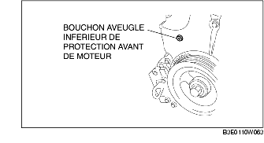
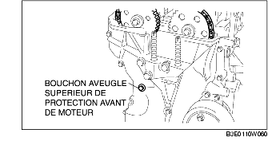
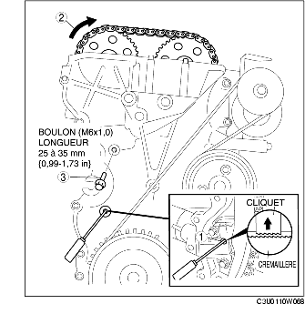
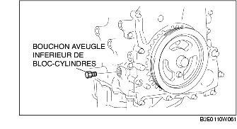

REGLAGE DE JEU DE SOUPAPE [LF]
B3E011012111W04
1. Déposer la plaque de trou de bougie. (voir la section DÉPOSE/REPOSE DE PLAQUE DE TROU DE BOUGIE [LF].)
2. Déposer le couvercle de la batterie. (voir la section DEPOSE/REPOSE DE BATTERIE [LF].)
3. Débrancher le câble négatif de la batterie.
4. Débrancher le faisceau de câblage.
5. Déposer les pièces suivantes.
-
(1) Roue et pneu avant (droite) (voir la section PROCEDURES GENERALES (SUSPENSION).)
-
(2) Cache inférieur de moteur et bavette (droite)
-
(3) Bobines d'allumage (voir la section DEPOSE/REPOSE DE BOBINE D'ALLUMAGE [LF].)
-
(4) Flexible de ventilation
-
(5) Couvercle de culasse
-
(6) Bouchon aveugle inférieur de cache avant de moteur

-
(7) Bouchon aveugle supérieur de cache avant de moteur

-
(8) Bouchon aveugle inférieur de bloc-cylindres
6. Placer l'outil SST comme indiqué dans l'illustration.
7. Faire tourner le vilebrequin dans le sens horloger ; le vilebrequin est dans la position de PMH du cylindre N° 1 (jusqu'à ce que le contrepoids soit attaché à l'outil SST).
8. Desserrer la chaîne de distribution.
-
(1) À l'aide d'un tournevis approprié ou d'un outil équivalent, déverrouiller le cliquet du tendeur de chaîne.

-
(2) Tourner l'arbre à cames d'échappement dans le sens horloger, à l'aide d'une clé appropriée montée sur la pièce hexagonale en fonte, et desserrer la chaîne de distribution.
-
(3) En plaçant un boulon adéquat (M6 X 1,0, longueur de 25mm-35mm {0,99-1,37in}) sur le bouchon aveugle supérieur de cache avant du moteur, fixer le guide-chaîne dans la position de relâche du tendeur.
9. Maintenir l'arbre à cames d'échappement à l'aide d'une clé appropriée montée sur la pièce hexagonale en fonte, comme indiqué dans l'illustration.
10. Déposer le pignon de l'arbre à cames d'échappement.
11. Desserrer les boulons de chapeau d'arbre à cames en 2-3 étapes, selon l'ordre indiqué dans l'illustration.
-
Remarque
-
• Les chapeaux d'arbre à cames et de culasse sont numérotés afin de garantir leur remise en place correcte, dans leur position d'origine. Une fois déposés, conserver les chapeaux avec la culasse correspondante. Ne pas mélanger les chapeaux entre eux.
12. Déposer l'arbre à cames.
13. Déposer le poussoir.
14. Sélectionner la cale de réglage adéquate.
-
Cale de réglage neuve
-
= épaisseur de cale déposée + jeu de soupape mesuré - jeu de soupape standard (IN: 0,25 mm {0,0098 in}, EX: 0,30 mm {0,0118 in})
-
Standard [moteur froid]
-
IN: 0,22-0,28 mm {0,0087-0,0110 in}
-
EX: 0,27-0,33 mm {0,0107-0,0129 in}
15. Reposer l'arbre à cames avec le cylindre N° 1 aligné sur la position de PMH.
16. Serrer le boulon de chapeau d'arbre à cames en effectuant les 2 étapes suivantes.
-
Couple de serrage
-
(1) 5,0-9,0 N·m
-
{51,0-91,7 kgf·cm, 44,3-79,6 in·lbf}
-
(2) 14,0-17,0 N·m
-
{1,5-1,7 kgf·m, 10,4-12,5 ft·lbf}
17. Reposer le pignon de l'arbre à cames d'échappement.
-
Remarque
-
• Ne pas serrer le boulon du pignon d'arbre à cames à cette étape. Commencer par s'assurer du bon réglage de la distribution de soupape, puis serrer le boulon.
18. Placer l'outil SST sur l'arbre à cames, comme indiqué dans l'illustration.
19. Retirer le boulon (M6 X 1,0, longueur de 25mm-35mm {0,99-1,37in}) du cache avant de moteur, afin de tendre la chaîne de distribution.
20. Faire tourner le vilebrequin dans le sens horloger jusqu'à ce qu'il se trouve dans la position de PMH du cylindre N° 1 (jusqu'à ce que le contrepoids soit attaché à l'outil SST).
21. Maintenir l'arbre à cames d'échappement à l'aide d'une clé appropriée montée sur la pièce hexagonale en fonte, comme indiqué dans l'illustration.
22. Serrer le boulon de verrouillage du pignon d'arbre à cames d'échappement.
-
Couple de serrage
-
69-75 N·m
-
{7,1-7,6 kgf·m, 50,9-55,3 ft·lbf}
23. Déposer l'outil SST de l'arbre à cames.
24. Déposer l'outil SST du bouchon aveugle inférieur de bloc-cylindres.
25. Faire tourner le vilebrequin sur deux tours dans le sens horloger, jusqu'à la position de PMH.
-
• S'il n'est pas aligné, desserrer le boulon de verrouillage de la poulie de vilebrequin, et répéter la procédure à partir de l'étape 14.
26. Appliquer un produit d'étanchéité à base de silicone sur le bouchon aveugle supérieur de cache avant du moteur.
27. Reposer les pièces suivantes :
-
(1) Bouchon aveugle supérieur de cache avant de moteur
-
Couple de serrage
-
8,0-11,5 N·m
-
{81,6-117,2 kgf·cm, 70,9-101,7 in·lbf}
-
(2) Bouchon aveugle inférieur de bloc-cylindres

-
Couple de serrage
-
18-22 N·m
-
{1,9-2,2 kgf·m, 14-16 ft·lbf}
-
(3) Nouveau bouchon aveugle inférieur de cache avant de moteur
-
Couple de serrage
-
10-14 N·m
-
{1,1-1,4 kgf·m, 7,4-10,3 ft·lbf}
-
(4) Cache de joint de culasse (voir la section Note sur la repose de couvercle de culasse.)
-
(5) Flexible de ventilation
-
(6) Bobines d'allumage (voir la section DEPOSE/REPOSE DE BOBINE D'ALLUMAGE [LF].)
-
(7) Cache inférieur de moteur et bavette (droite)
-
(8) Roue et pneu avant (droite) (voir la section PROCEDURES GENERALES (SUSPENSION).)
28. Brancher le faisceau de câblage.
29. Brancher le câble négatif de la batterie.
30. Reposer le couvercle de batterie. (voir la section DEPOSE/REPOSE DE BATTERIE [LF].)
31. Reposer la plaque de trou de bougie. (voir la section DÉPOSE/REPOSE DE PLAQUE DE TROU DE BOUGIE [LF].)